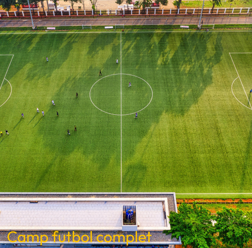
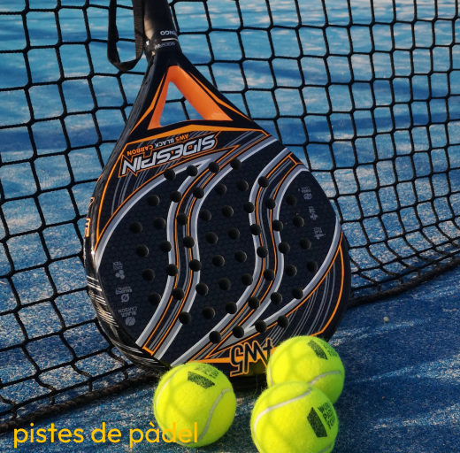
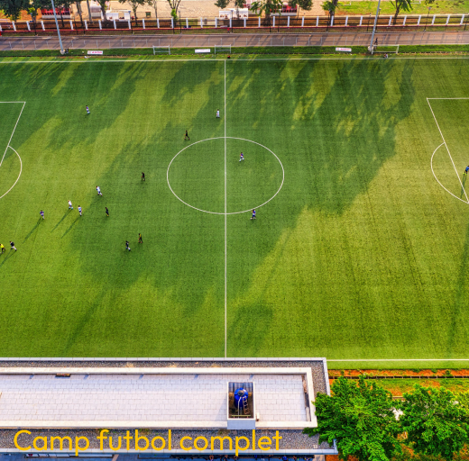
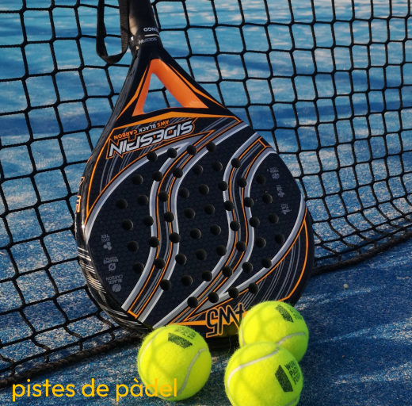
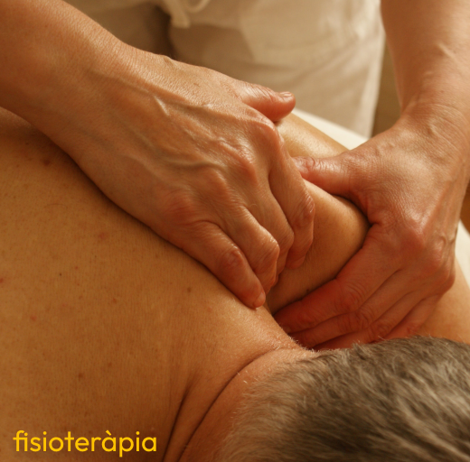
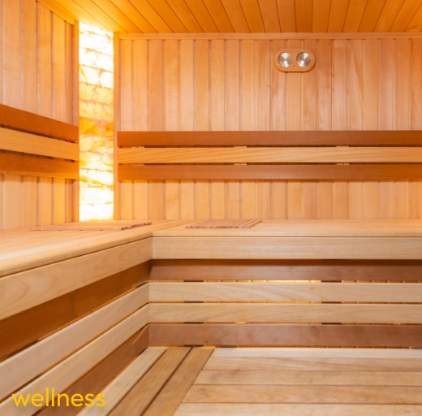
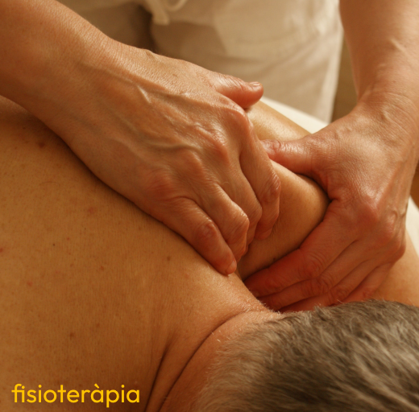
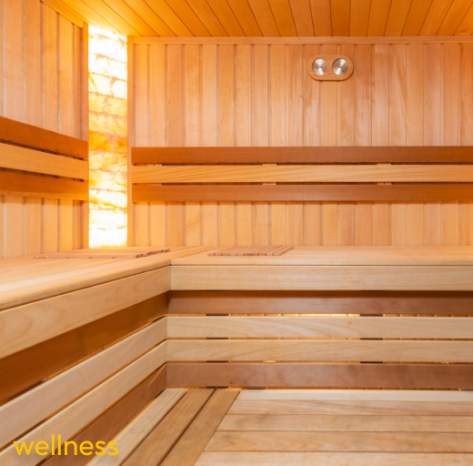

Història
Celebrem amb orgull la rica història del nostre estimat Club Esportiu Palomar, que va ser fundat amb
entusiasme el 1955 al cor del barri de Sant Andreu de Palomar a Barcelona.
Amb més de 65 anys
d'experiència, hem teixit una intrèpida narrativa esportiva, convertint-nos en una peça fonamental de la
comunitat local.
Des de les nostres humils arrels fins als èxits actuals, hem dedicat dècades a formar
no només futbolistes, sinó també individus compromesos i apassionats. Amb una forta connexió amb el passat i
la mirada posada cap al futur, continuem sent una font inesgotable d'inspiració per als amants de
l’esport a Sant Andreu del Palomar.
Uneix-te a nosaltres i sigues part d'aquesta fascinant
història esportiva.
Visca el Club Esportiu Palomar!


 



 


